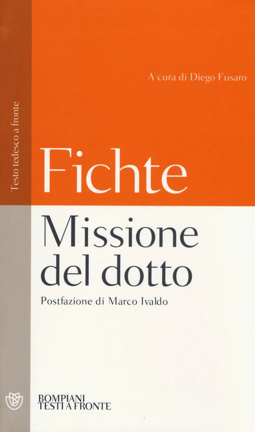

15:06 · 2 OPERE
Un appunto sulla pensosità (Nachdenklichkeit).
Il filo del discorso
Una breve riflessione sulla differenza fra il generico esercizio del pensare e la pensosità come esperienza che interrompe il rapporto abituale con il mondo. Il punto di partenza è la povertà di una terminologia che raccoglie sotto la stessa parol’operazioni molto diverse, dall’apprendimento meccanico al pensiero filosofico. Il richiamo alla missione del dotto di Fichte e alla domanda di Heidegger su che cosa significhi pensare apre il confronto con la Grecia antica. Il relatore mette al centro Socrate, il dubbio e l’atopia, interpretando il suo raccoglimento come apertura a qualcosa che non si può programmare. Con Carlo Diano, forma ed evento diventano strumenti per descrivere questa esperienza; l’immagine heideggeriana della radura ne suggerisce il carattere improvviso. La conclusione collega la perdita di tale dimensione all’affermarsi del pensiero calcolante e vede nella poesia uno degli ultimi luoghi capaci di conservarla.
I libri nel discorso

La missione del dotto
Copertina: Bompiani, 2013 · Testi a fronte · edizione di riferimento
Fichte è nominato a 158 secondi, subito prima del richiamo alla missione del dotto.
Passaggio 2:41 ↗ · Fonti e libro ↗
Che cosa significa pensare?
Copertina: SugarCo · Tasco · edizione di riferimento
Heidegger introduce il riferimento a Was heißt Denken?, seguito dalla resa italiana Cosa significa pensare a 206–210 secondi.
Passaggio 3:26 ↗ · Fonti e libro ↗